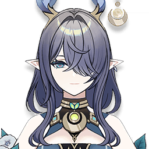
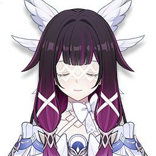
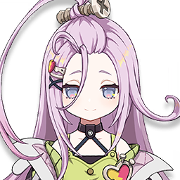
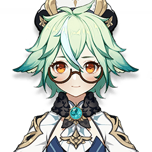
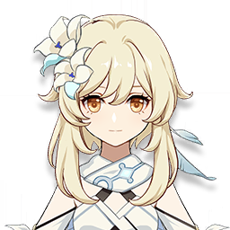
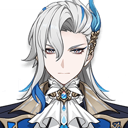
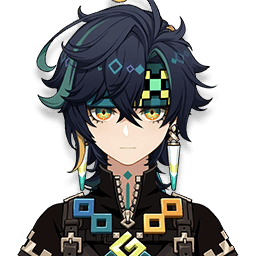
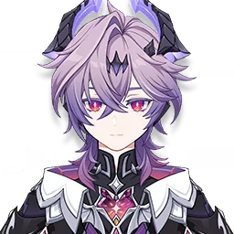
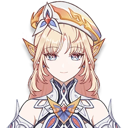
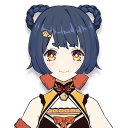

Лучшие отряды: Лаума
5★ · Дендро · Катализатор · отрядов в базе: 51 · лучший DPS 141 309
Открыть в GI-Rec
Лучшие отряды
- 1

Коломбина C0Песнь странника R5Ночь открытия неба ×4 
Инеффа C0Баллада фьордов R1Серенада шёлковой луны ×4 Лаума C0Лютня ткача света R5Позолоченные сны ×4 
Фурина C0Меч Фавония R5Воспоминания дремучего леса ×4 141 309DPSKQMS
- 2
Коломбина C0Песнь странника R5Ночь открытия неба ×4 Инеффа C0Баллада фьордов R1Рассветная песнь звезды и луны ×4 Лаума C0Лютня ткача света R5Серенада шёлковой луны ×4 
Е Лань C0Боевой лук Фавония R5Воспоминания дремучего леса ×4 136 537DPSKQMS
- 3
Коломбина C0Песнь странника R5Ночь открытия неба ×4 Инеффа C0Баллада фьордов R1Воспоминания дремучего леса ×4 Лаума C0Лютня ткача света R5Серенада шёлковой луны ×4 
Кандакия C6Копьё Фавония R5Инструктор ×4 134 463DPS
- 4
Коломбина C0Песнь странника R5Ночь открытия неба ×4 Инеффа C0Гроза драконов R5Серенада шёлковой луны ×4 Лаума C0Лютня ткача света R5Позолоченные сны ×4 
Айно C6Двуручный меч Фавония R5Воспоминания дремучего леса ×4 131 692DPSKQMS
- 5
Коломбина C0Песнь странника R5Ночь открытия неба ×4 Инеффа C0Гроза драконов R5Серенада шёлковой луны ×5 Лаума C0Лютня ткача света R5Позолоченные сны ×2 + Странствующий ансамбль ×2 
Нахида C0Песнь странника R5Воспоминания дремучего леса ×4 130 854DPSKQMS
- 6
Коломбина C0Песнь странника R5Ночь открытия неба ×4 Инеффа C0Баллада фьордов R1Воспоминания дремучего леса ×4 Лаума C0Лютня ткача света R5Серенада шёлковой луны ×4 Барбара C6Кодекс Фавония R5Инструктор ×4 130 106DPS
- 7
Коломбина C0Песнь странника R5Ночь открытия неба ×4 Инеффа C0Баллада фьордов R1Рассветная песнь звезды и луны ×4 Лаума C0Лютня ткача света R5Серенада шёлковой луны ×4 
Син Цю C6Меч Фавония R5Воспоминания дремучего леса ×4 129 525DPSKQMS
- 8
Коломбина C0Песнь странника R5Ночь открытия неба ×4 Инеффа C0Гроза драконов R5Воспоминания дремучего леса ×4 Лаума C0Лютня ткача света R5Серенада шёлковой луны ×4 Далия C6Меч Фавония R5Инструктор ×4 125 541DPS
- 9
Коломбина C0Песнь странника R5Ночь открытия неба ×4 
Фишль C6Бесструнный R5Воспоминания дремучего леса ×4 Лаума C0Лютня ткача света R5Серенада шёлковой луны ×4 
Сахароза C6Церемониальные мемуары R5Инструктор ×4 124 920DPS
- 10
Коломбина C0Песнь странника R5Ночь открытия неба ×4 
Синобу C6Лунное сияние ксифоса R1Серенада шёлковой луны ×4 Лаума C0Лютня ткача света R5Позолоченные сны ×2 + Странствующий ансамбль ×2 Нахида C0Песнь странника R5Воспоминания дремучего леса ×4 123 867DPSKQMS
- 11
Коломбина C0Песнь странника R5Ночь открытия неба ×4 Инеффа C0Баллада фьордов R1Воспоминания дремучего леса ×4 Лаума C0Лютня ткача света R5Серенада шёлковой луны ×4 
ГГ (Гидро) C6Меч Фавония R5Инструктор ×4 122 193DPS
- 12
Коломбина C0Песнь странника R5Ночь открытия неба ×4 
Райдэн C0Гроза драконов R3Цветок потерянного рая ×4 Лаума C0Лютня ткача света R5Серенада шёлковой луны ×4 Нахида C0Песнь странника R5Воспоминания дремучего леса ×4 119 930DPSKQMS
- 13

Нёвиллет C0Жертвенный нефрит R1Охотник Сумеречного двора ×4 Коломбина C0Жертвенный нефрит R1Серенада шёлковой луны ×4 Лаума C0Лютня ткача света R5Воспоминания дремучего леса ×4 Инеффа C0Крест-копьё Китаин R5Цветок потерянного рая ×5 117 104DPSKQMS
- 14
Нёвиллет C0Жертвенный нефрит R1Охотник Сумеречного двора ×5 Инеффа C0Крест-копьё Китаин R5Цветок потерянного рая ×4 Лаума C0Прототип: Янтарь R5Серенада шёлковой луны ×5 Фурина C0Осквернённое желание R5Воспоминания дремучего леса ×5 114 960DPSKQMS
- 15
Нёвиллет C0Жертвенный нефрит R1Охотник Сумеречного двора ×5 Фурина C0Волчий клык R1Золотая труппа ×5 Лаума C0Прототип: Янтарь R5Воспоминания дремучего леса ×5 Райдэн C0Гроза драконов R3Цветок потерянного рая ×4 112 607DPSKQMS
- 16
Коломбина C0Жертвенный нефрит R1Серенада шёлковой луны ×4 Инеффа C0Крест-копьё Китаин R5Цветок потерянного рая ×5 Лаума C0Лютня ткача света R5Воспоминания дремучего леса ×4 Аято C0Чёрный меч R1Ночь открытия неба ×4 108 873DPSKQMS
- 17

Кинич C0Меч драконьей кости R1Обсидиановый фолиант ×4 Лаума C0Эпос о драконоборцах R5Воспоминания дремучего леса ×4 
Дурин C0Волчий клык R1Церемония древней знати ×4 
Николь C0Око клятвы R5Дар небес ×4 108 562DPSKQMS
- 18
Райдэн C0Гроза драконов R3Цветок потерянного рая ×5 Лаума C0Лютня ткача света R5Цветок потерянного рая ×2 + Позолоченные сны ×2 Син Цю C6Меч Фавония R3Серенада шёлковой луны ×4 Нахида C0Песнь странника R3Воспоминания дремучего леса ×4 107 654DPSKQMS
- 19
Нёвиллет C0Жертвенный нефрит R1Охотник Сумеречного двора ×5 Фурина C0Волчий клык R1Золотая труппа ×5 Лаума C0Лютня ткача света R5Воспоминания дремучего леса ×5 Синобу C6Лунное сияние ксифоса R1Цветок потерянного рая ×4 106 589DPSKQMS
- 20
Нёвиллет C0Жертвенный нефрит R1Охотник Сумеречного двора ×5 Фурина C0Волчий клык R1Золотая труппа ×4 Лаума C0Прототип: Янтарь R5Воспоминания дремучего леса ×5 
Сян Лин C6Крест-копьё Китаин R5Серенада шёлковой луны ×5 104 106DPSKQMS
Вид по умолчанию: 5★ персонажи на C0, 4★ на C6, без 5★ оружия. Другие созвездия и оружие — в приложении.
Чаще всего в отряде с
Другие персонажи: Дендро
 Клориндаотрядов: 6
Клориндаотрядов: 6 Эмилияотрядов: 6
Эмилияотрядов: 6